Guided Tour of an Example MSB (Beam-Switched Sample)
Go to the JCMT root window, and open the ACSIS library by clicking on :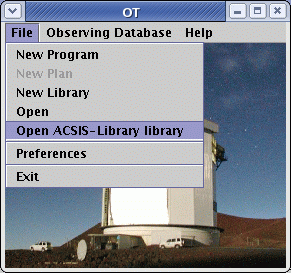
A window will pop up containing a list of folders. The little switch on the left of the folder icons is an open/close toggle switch. Push open the folder titled "Samples" and then select the MSB labeled "Beam-switch sample(1X) " and click "Copy" on the toolbar.
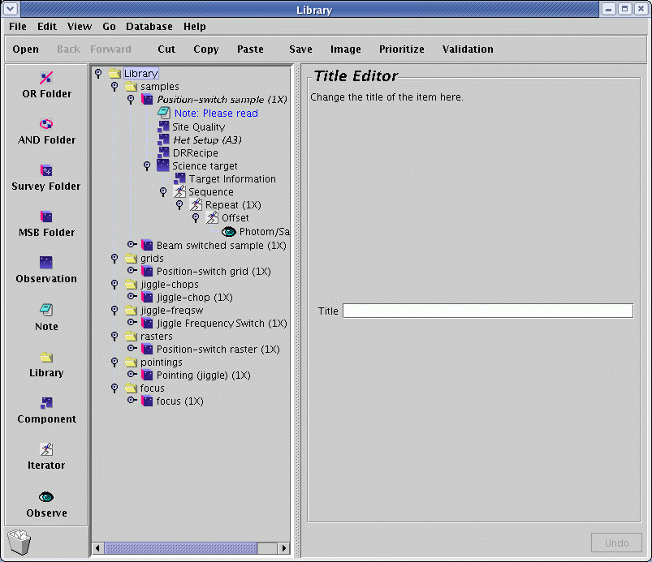
Now go back to your Science Program window, and click on "Paste". The MSB will be dropped into your science program. Congratulations! You're now well underway. Now is a good time to save your progress, so use the File->Save option in your Science Program window and carry on.
Really Important Aside - or is it Inside?
Do you see how the icon for the MSB is not directly below the icon for the Science Program but indented to the right? That's because the MSB is inside the Science Program. This is a classic way of representing a hierarchical structure, and many of you will be familiar with it from other applications, such as the "Manage Bookmarks" screen in the Netscape and Mozilla browsers.Editing the MSB component
Click on the title of the MSB. This will activate the MSB editor panel on the right section of your window.
The properties of an MSB are very simple.
- It has a title, at the moment "Beam-switch sample". When preparing your own MSB, this title should be changed to something meaningful describing the observation, usually with target name. Examples might be "B/SW observation of OMC1" or "3 point grid of M83". Please take the time to do this - it really helps the person doing the observing.
- A pull down menu with a repeat counter. Leave that to 1 for the time being.
- The priority of the MSB. Note that this only affects the internal priority of your MSBs - not the priority allocated to your entire project by your TAG. So if you had two different MSBs that rose to the top of the scheduling queue and one had priority "1" and the other "99", the one marked "1" will normally get done first. If all your MSBs are of equal interest to you, just don't bother changing the default. Small print: Bear in mind though that MSB selection is an operational decision - marking your MSBs with priorities 1, 2, 3 etc is no guarantee that they will be done in precisely that particular order. For example, your lower-priority MSBs could be done because they are observable at a time of day where there is not much else in the queue, whereas your high-priority MSBs could be competing against the top-ranked project. Also, the observer/TSS may sometimes select a lower priority MSB because it is the most efficient choice at the time, because of its duration or azimuth.
Elements of an MSB
Click on the push lever to open up your MSB. Inside you will find a Het Setup component, a Target Info. component, a Site Quality component, and an observation component which is labelled "Observation":
Components, Iterators And All That
- MSBs
are individually schedulable blocks and
contain one or more fully specified science
observation and any calibrations. For heterodyne observations,
calibrations will be described in a show-to-observer note.
 Observations
are observations of a single astronomical
target and contain components and a sequence.
Observations
are observations of a single astronomical
target and contain components and a sequence. Components
are configurators for the JCMT systems such as
the instrument (het setup component), the telescope (Target
component) and the scheduler (Site Quality component).
Components
are configurators for the JCMT systems such as
the instrument (het setup component), the telescope (Target
component) and the scheduler (Site Quality component).  Iterators
are potentially multiple actions and
contain other iterators and one or more
eyes.
Iterators
are potentially multiple actions and
contain other iterators and one or more
eyes. Eyes
are actions that results in the actual taking
of data - a single data file per eye to be precise.
Eyes
are actions that results in the actual taking
of data - a single data file per eye to be precise. Notes
are a repository of useful information and can
go anywhere.
Notes
are a repository of useful information and can
go anywhere.
We'll now go through these individually.
The Het Setup component
If you click on the "Het Setup" component you will see the window below. The purpose of this component is to enable the configuration of the required heterodyne instrument (the Front End) and ACSIS (the 'back end') prior to an observation.
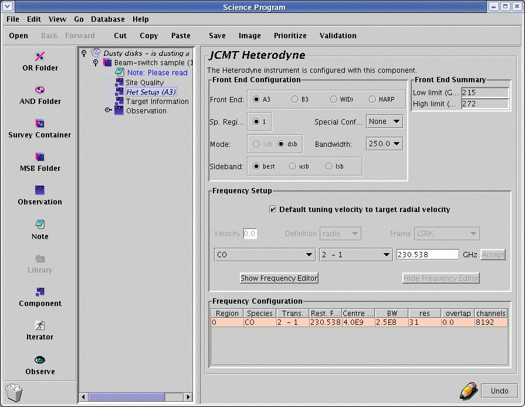Four boxes are displayed in the editor panel.
Front End Configuration
- The first item in the Het Setup component enables the user to choose the required receiver or Front End. The tuning/frequency range over which the selected receiver can be tuned is displayed in the Front End Summary box in the top-right corner.
- The Sp.(ectral) regions box allows the selection of multiple spectral windows. These may be selected from among a list of favourite combinations in the Special Config(uration)s pull-down menu to the right, or defined interactively using the Frequency Editor (see below). The Frequency editor tool is shown and hidden using the buttons further down the window.
- The Bandwidths menu item allows the selection of the required bandwidth (in MHz) for each Spectral Region. The resulting spectral resolution (in kHz) is shown automatically updated in the "res" entry in the Frequency Configuration table at the bottom of the Het Setup menu.
- The Mode box allows a choice between double sideband (dsb) and single sideband (ssb) operation. Note that receiver A has no single sideband capabilities, so "dsb" is the only allowed option.
- The Sideband menu allows the choice of sideband. Sideband suppression is not absolute in the SSB receivers, so the user should avoid, if possible, the situation where the unwanted sideband corresponds to a frequency where the zenith opacity or receiver noise is high. In most cases, however, you could simply select "Best".
Frequency Setup
Tuning of the receiver requires a rest frequency and a velocity. If the aim is to observe a specific molecular transition the user may use the pull-down lists of molecules and transitions to generate the frequency. The example above shows the CO J=2-1 combination (230.538 GHz). Alternately, the tuning frequency may be specified explicitly in GHz. The frequency will appear in RED until the Accept button is clicked. This is essential to ensure acceptance of the input. This method will also result in the phrase 'No line' appearing in the molecule and transition fields, even if the frequency does in fact correspond to a known transition. (Look-up occurs from molecule/transition to frequency only - no look-up is done in the opposite direction).
The velocity of the target may be entered either here or in the Target Information component; this second option is activated by ticking the box marked Default tuning velocity to target velocity. If entering the velocity here you must also specify the Velocity Definition and Velocity Frame from the two pull-down menus, and click the "Accept" button (to the right of the frequency field). (Note that the velocity will appear in RED until you click on the Accept button. Failure to click on the Accept button will mean the velocity you entered will be lost.)
- If your source has a very large radial velocity, you should:
- Select the receiver within whose tuning range the (redshifted) line will fall. For example, at a redshift of 2.0, the neutral carbon [CI] J=2-1 line, whose rest frequency is 809 GHz, will fall into the tuning range of RxA.
- Specify the radial velocity of the source, as above, either in the Het. Setup velocity field, or in the Target Info. velocity field. (If you choose the latter, make sure the Target Info. component is on the same level as the Het. Setup component, and not embedded in the observation sequence.) If you enter the velocity in the Het. Setup component, be sure to click the Accept button before proceeding.
- The OT now corrects its lookup table of transitions for the entered velocity. Select a molecule and transition from the pull-down menu, or enter the rest frequency of the spectral line (and click the Accept button). Beware, however, that if you enter a value manually into the frequency field, the OT will not check to see if the redshifted line is in the tuning range of the receiver you selected.
Frequency Editor
Clicking on the Frequency Editor button will show you something like this:
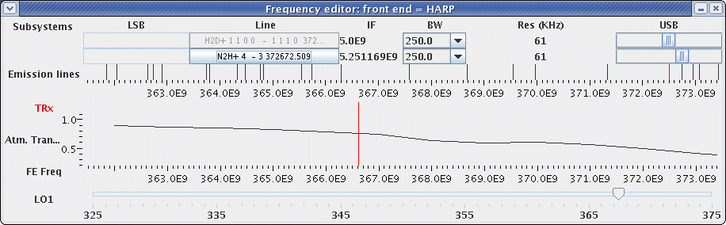
The frequency editor tool is particular useful when it comes to receivers operating in double sideband mode, where two differing sky frequencies end up with the same IF frequency. In this case, identifying spectral lines can be tricky since one does not know, a priori, which sideband they are from. This tool now handles multi-spectral window selections and can be used interactively in choosing observing frequencies and bandwidths, particularly where you might want to observe several lines at once in one window with DSB receivers, or when using special ACSIS configurations, or simply to check the atmospheric opacity at the observed (or sideband) frequency.
Working roughly from top to bottom, left to right, in the example above
showing only one Spectral Subsystem we see:
- the observing and image side-bands, marked as LSB and USB
- their locations within the respective LO2 ranges and their widths
- the identification of the selected emission line, marked Line
- the IF (Intermediate Frequency), sometimes in Hz sometimes GHz
- the bandwidth, in MHz
- the Resolution that the selected bandwidth produces, in kHz
- the molecular transitions in this vicinity, marked by vertical bars, on a line labelled Emission Lines
- the frequency scale immediately below Emission Lines is the FE frequency, doppler shifted by the velocity value and definition entered in the het-setup component. You will notice this scale will shift if you enter a non-zero velocity, and will also shift if you change the velocity definition.
- the line selected is shown in red
- the receiver temperature (TRx) is plotted as the >font color=red>red line (although there is no scale currently). It's wise to check this since even a minor change in radial velocity can shift the observed frequency into a region of very large atmospheric opacity.
- the FE Frequency scale, shown below the plot of TRx is the observing frequency in the rest frame of the receiver
- the Local Oscillator frequency, shown as LO1, located within
the full tuning range of the receiver.
- Note the upper frequency scale, lower frequency scale and LO1 are only approximate because the correction from the receiver rest frame to the chosen rest frame requires the Doppler correction for the Earth's motion, which varies with time.
- the positions of the windows can be changed by clicking on the window sliders and dragging . . . Note how the LO1 and LO2 (ie the IF) both change
- the bandwidth can be changed by clicking on the pull-down menu
- clicking anywhere along the 'Emission lines' level will identify the nearby lines.
- keeping the mouse button depressed while scrolling down through the menu makes the line appear in green
- The LO1 frequency can be changed by right-clicking on the slider and dragging. This changes both frequency scales and the line rest frequency. Moving the LO slider can be a convenient means of choosing a band centre frequency such that particular spectral lines are included or excluded from your passband.
To generate a multi-line, multi-Subsystem configuration:
- In the Front-End configuration window, select a value of Sp.(ectral) regions greater than 1. The Frequency Configuration block at the bottom of the screen will show the appropriate number of 'Region's, although initially they are populated with default values.
- Select the first line (for Region 0) as above.
- Press the Frequency Editor button to generate a Frequency Editor window with the appropriate number of Subsystems. The pre-selected line is in red.
- Click at the level of 'Emission Lines' in the general vicinity (frequency space) of the next desired line
- keep the button pressed and scroll down until the line is met, and shown in green
- click on the sideband window and drag the window over the green line
- click on the 'Line' box appropriate for that subsystem to transfer the line identity
- Repeat (from Click) for further lines if necessary
- Press the Hide Frequency Editor button to transfer these data to the Heterodyne Setup window
Site Quality
The Site Quality component specifies any weather-related scheduling requirements for an MSB. Click on the Site Quality component to get the Site Quality panel:

Your TAG normally allocates your program a certain range of tau (opacity), so you probably don't need to change anything here unless your program is using multiple receivers and the TAG-allocated tau range is not sufficiently specific for this MSB. You should specify an appropriate range of tau to match the demands of the receiver to be used. But : the resulting range of tau in which the MSB can be observed is then the intersect of the TAG allocation and your input: make sure this is not an empty set ! For example, if the TAG allocation for your project is weather band 4 (tau(225GHz) between 0.12 and 0.2) and you request a tau range between 0.1 and 0.12, then your project will be picked up for observation ONLY if the tau is EXACTLY 0.12.
The default value of the sub-millimetre seeing is "Don't Care".
It is useful to set the "τ for noise calculation" value, however, to the average or expected value of tau during which your observations are expected to be obtained. (Note that the OT does not know what τ range was allocated for your project.) The OT uses the value in this field to calculate the estimated RMS of the observation specified in the phot/sam etc. "eye"-cons.
Scheduling Constraints
The Scheduling Constraints component allows one to restrict or broaden the time over which an MSB will be selected. To insert this component, click on the Component button on the left side near the bottom of the OT window, and select the "Sched. Constraints".
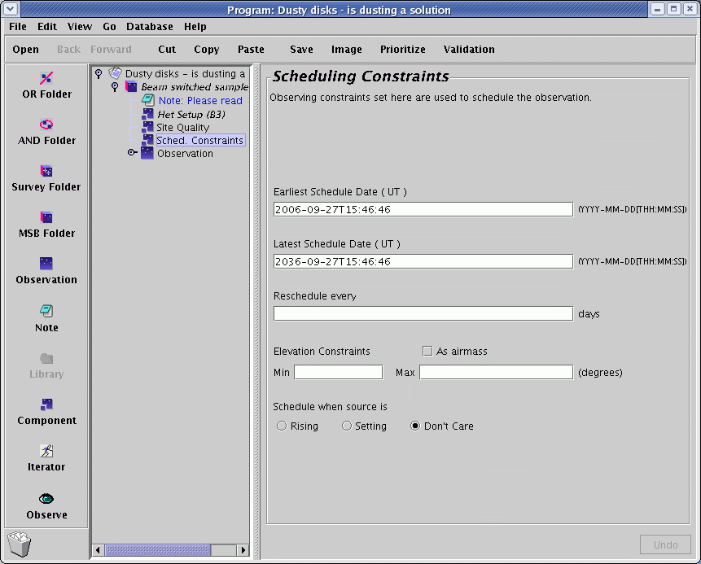
The main reason you might want to insert this component is if your science targets have a very low or very high declination (i.e. δ < ~-35o or δ > ~+80o). By default, MSBs are only selected when the sources are above about 30o elevation, so low- and high- declination sources may never be selected unless you specify a lower minimum elevation. Similarly, sources at ~19o declination transit almost directly overhead, and you may wish to restrict such sources to be selected when they're not at extremely high elevations.
Another reason to insert this component is if your observations are time-critical, i.e. they must not be done before a certain date or after a certain date. This can be specified by changing the Earliest and/or Latest Schedule Date.
You may also need to use this component if you have a project which requires periodic observations, for example if you were monitoring a variable source. In that case, you can specify the repeat time in the "Reschedule every..." box. The MSB will be reactivated at the appropriate time.
The Observation component
Now click on the Observation component to bring up its panel. If you recursively open all of the toggle switches, the individual components will be displayed as a hierarchy, as shown below.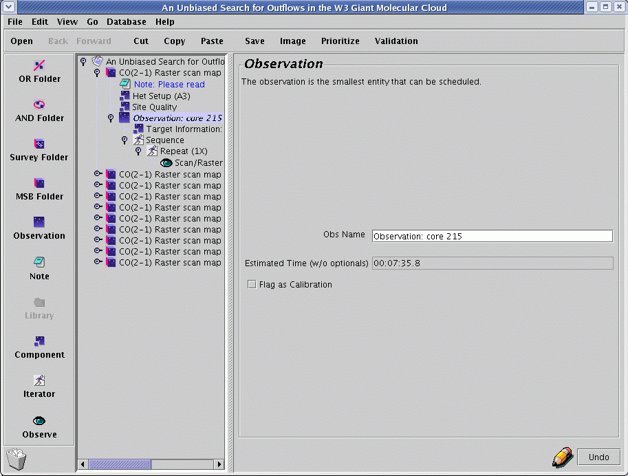
The first element inside the Observation component can be the "Target information" component. Note, however, that in the templates the target component is outside the Observation component. This allows one to construct an MSB to perform multiple observations on a single target: such MSBs would therefore contain multiple Observation components. More importantly for heterodyne observations it allows the Het. Component to access velocity information that may need to be obtained from the Target Component. Further details on this issue of component nesting may be found in the section on advanced topics. Following the Target component in the example is a sequence iterator which contains a repeat iterator, then (depending upon the observation type) perhaps a chop iterator or an offset iterator - a position-switched raster centred on the Target, as in this example, needs neither - and then, finally, a single (action) "eye". The sequence iterator doesn't do anything per se, but it is important to note that it represents the sequence of events at the telescope. The repeat iterator allows the user to control the number of repeats carried out for a certain observation. The "eye"-con represents the observation itself.
The "Flag as calibration" button should be toggled ON if, indeed, this observation is intended as a calibration for others. This fact is then made known to the TSS who may decide not to execute the observation (er . . calibration) if a suitable calibration has recently been done already.
The target component
Click on the target component to bring up its panel: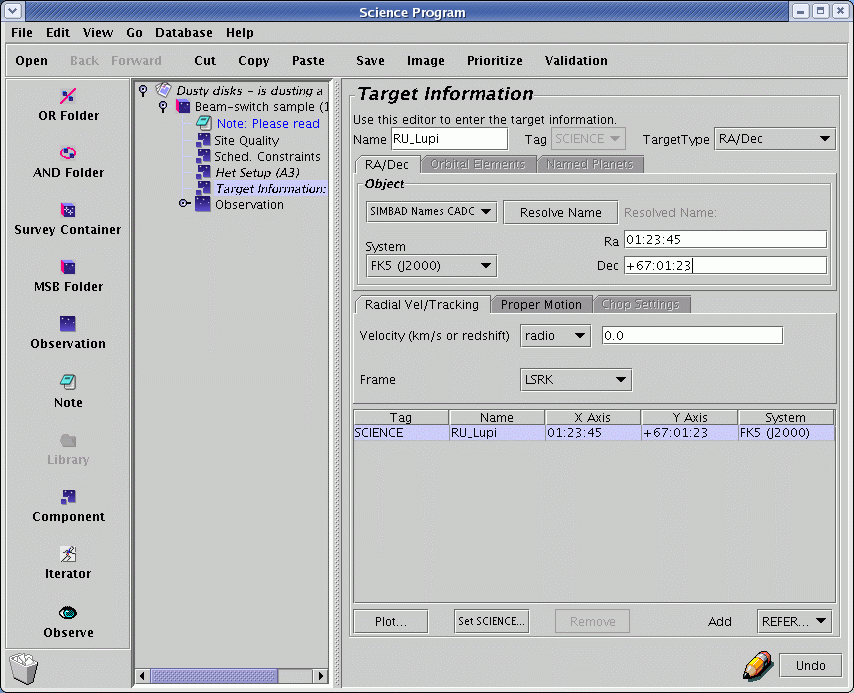
In this component you will enter the coordinates and velocity of the source, and the coordinates of the reference position (for position-switched observations).
The "Target Type" is a pull-down menu that allows you to select RA/Dec (most common), Orbital Elements (for comets, etc.), or a Named Planet. The window changes for each selection.
For RA/Dec targets, enter the R.A. and Dec. in the appropriate boxes, using colons as separators. One of several different coordinate systems can be selected with another pull-down menu, such as J2000, B1950, etc.
It is now necessary to specify the radial velocity of the source in the target component, either as a radio, optical, or relativistic velocity, or redshift (z). Note that if the velocity was specified in the Het. Setup component, it may not be necessary to specify the velocity here.
To specify a reference position, click on "REFERENCE". The default is to enter the offset (in arcseconds) from the source position, but by unchecking the "Offset" button, you can enter an absolute position for the reference.
Instead of entering the source coordinates manually, you can download it from the Web. If you are using a machine with an Internet connection you can enter the name of your target, select the on-line catalogue to search (i.e. SIMBAD or NED) from the pull-down menu, and hit "Resolve Name". After a brief pause the RA and DEC co-ordinate fields should become populated with the SIMBAD/NED co-ordinates for the source. The SIMBAD/NED name for the source will also be indicated next to the "Resolve Name" button.
: Positions of astronomical objects are often wavelength dependent. For example, the SIMBAD coordinates for IRAS16293-2224 are many arcminutes different from the JCMT coordinates. The catalogues you may be using will have defined the astrometric positions therein on the basis of optical- or infrared- or radio- observations. You should check that the positions now showing are valid for your submillimetre studies.
But wait - that's not all.
The position editor
You can skip this section if you want because you don't have to do anything, but it's kind of cool and can be very useful in picking a good chop position. Click on the plot button at the bottom left of the target panel:A whole new window will pop up - this is the position editor. Looks a bit boring at the moment though, with just a small green crosshair in the middle. Let's make it a bit more interesting - go to Catalog menu and into the Image Servers item and chose a Digital Sky Survey near near you:
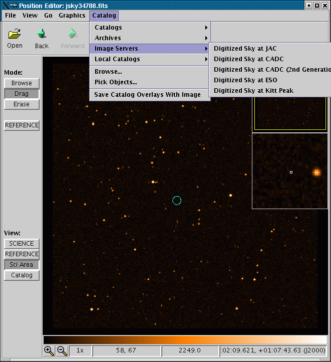
It's now full of stars. The display application, by the way, is is based on JSky, for those familiar with it.
If you're having problems with the position editor, the most likely explanation is that your version(s) of JRE, JAI and/or java may not be sufficiently up-to-date; check the download page for more information. If you are behind a firewall, you may need to check your proxy server settings.
The DSS may not be the most useful survey for planning sub-millimetre observations, but you can read in any FITS image with an appropriate WCS header using Open under the File menu. You can also fetch a FITS image over the Web. The screenshot below shows the SCUBA commissioning scan map of W48 (image courtesy Tim Jenness). If you have an Internet connection, go to the File menu, select "Open URL...:" and type in the following URL: http://www.jach.hawaii.edu/software/jcmtot/w48.fits or download the image by clicking on the link and and use File->Open to read it in. Notice that the RA/DEC position fields of the target component must be set reasonably near to the world co-ordinate of the FITS file otherwise the image may not load properly.

You will then see the DSS image replaced with the sub-millimetre image.
A short technical note if you are planning on generating your own image for import: if you want to import a SCUBA map in NDF format, convert it to FITS by using the Starlink convert utility with the following arguments:ndf2fits encoding=FITS-IRAF bitpix=32 comp=DIf you have difficulty despite doing this, let us know.
As was mentioned before, the green cross-hair is the position of your science co-ordinates. Click on the button on the left side of the position editor entitled "Sci Area". The circle that is drawn is the HPBW of the chosen heterodyne receiver.
Now for the useful thing mentioned earlier: While leaving the position editor window open, go back to your science program window and click on your chop iterator that is inside your science observation. Now look at the position editor. The chop beams and the area in which they will rotate during integration are drawn. Well, that's no good - we're chopping onto bright stuff!

This is where the position editor comes into its own. We are going to use it to specify where exactly we would like to chop. In the chop iterator, use the drop down menu to change the chopping co-ordinate frame from AZEL to TRACKING (i.e. RA/DEC). You will notice that in the position editor the uncertainty circles have disappeared, since we will always chop in the same position in the sky:
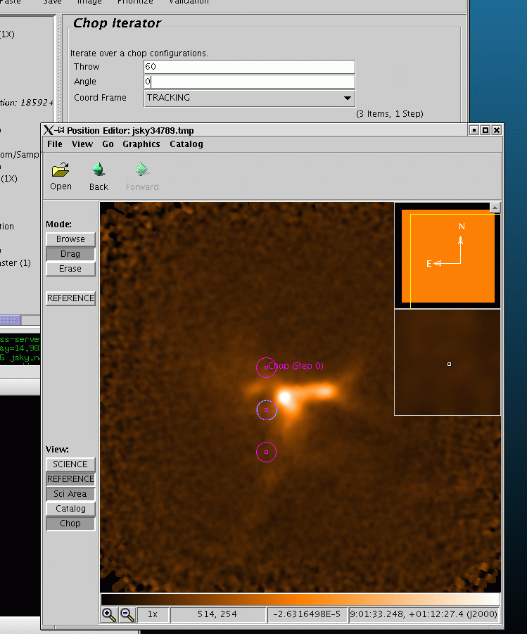
Now back in the position editor, click on the Drag button on the upper left side of the window. Then click on the centre of one of the chop beams in the display and drag it away from the emission:

You will note that the values in the chop iterator have automatically changed to reflect the new chop throw and angle values. Neat, eh? Remember that by default, any calibrations for your observations will be performed with the same chop as the science observation.
You can also click on the target component and use Drag to change your science co-ordinates if you wish.
The chop iterator
Click on the chop iterator: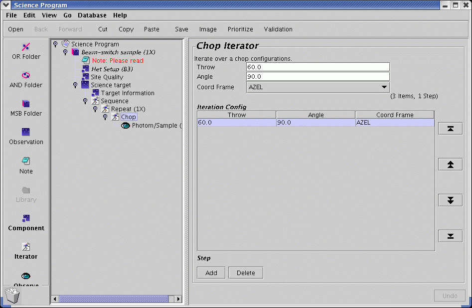
The chop iterator has a list of chop configurations (in this example only one 60 arcsecond chop). Each chop needs to be specified by a throw, an angle, and co-ordinate frame of the angle. In this example the frame is AZEL (Azimuth Elevation) but other common options are TRACKING (RA & Dec) or FPLANE (Focal Plane). A 60 arcsecond chop with an angle of 90 degrees AZEL (i.e. 60 arcsec in the azimuth direction) is typical for beamswitched observations of compact sources. If the source is extended, one might want to increase the chop throw, or if the source was elongated in one direction on the sky, chop in a rotated direction relative to the RA/DEC frame. The maximum recommended chop throw is 180 arcsec. There is a software limit of 240 arcsec. Chopping with large throws is less efficient than using small throws and also there will be a slight distortion of the beam due to observing off-axis. Clicking on Add one can add chop configurations. Each configuration will result in a separate observation (and data file).
The offset iterator
It's often very useful to be able to specify a position with the Target component, but to take an observation at a position offset from that specified. That can be done with the "offset" iterator. In addition, with Grid maps, a whole series of offsets can be specified in either a regular or irregular spacing.
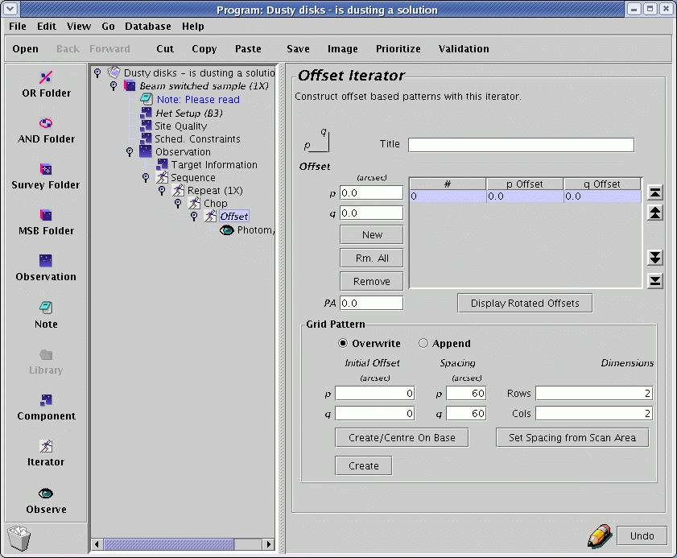
If an offset iterator is not already specified in the MSB, one can
insert it below the Sequence iterator  , usually just above the
photom/sample "eye"-con
, usually just above the
photom/sample "eye"-con  .
Click on the iterator below which the offset iterator is to be
inserted (the 'chop' iterator in the image above), then click on
the iterator menu on the left-hand panel of the OT window and
select the offset iterator. Be sure to "drag" the photom/sample
eye-con to the right, so that it is indented with respect to the
offset iterator (see figure above).
.
Click on the iterator below which the offset iterator is to be
inserted (the 'chop' iterator in the image above), then click on
the iterator menu on the left-hand panel of the OT window and
select the offset iterator. Be sure to "drag" the photom/sample
eye-con to the right, so that it is indented with respect to the
offset iterator (see figure above).
The offset is specified in arcseconds in the 'p' and 'q' boxes. Note the orientation of these axes to the left of the 'Title' box. In an unrotated frame, 'p' is in the positive r.a. direction (i.e. east) while 'q' is in the declination direction (i.e. north). If a rotated frame is required, enter the position angle (measured east of north) in the 'PA' box. If you then click on the 'Display Derotated Offsets' button, the specified offsets in the unrotated frame will be briefly displayed in the table above.
To add more offsets, click the 'New' button, and enter the offset in the 'p' and 'q' boxes as above. Repeat for as many positions as required.
A regular grid can also be specified using the 'Grid Pattern' section of the window. See the section on Grid Maps for a description. Note that all offsets at the JCMT are defined in the Gnomonic (TAN) projection.
The photom/sample eye
The science observation itself is represented within the MSB by the photom/sample eye. Click on it to display the details of the observation. The pull down menu near the top of the right hand frame allows the user to choose from beam switching or position switching. In this example we are beam-switching, and the chop throw was set with the chop iterator. In the "Secs per offset sample" box, enter the total on-source integration time per sample position in seconds. (Note this is different from how it's been done in the past when we specified the on+off time.) The estimated RMS noise per channel is shown in the "Noise" box. Typical recommended on-source integration times per sample are 5 to 10 minutes. We advise to use no observing times >15 minutes, at the risk of loosing observations when something goes wrong.The Continuum Mode box can be checked if you need an accurate measurement of the continuum level. Typically this only makes sense when doing a BMSW observation, because the switching time for PSSW observations are too long for a reliable determination of the continuum. For BMSW observations, the effect of checking 'Continuum mode' is to run the chopper much faster. This will result in higher overheads which can significantly increase the time it takes for the observation to complete. Hence, this mode should only be used when really needed. As a concrete example: the maximum time between chops typically allows for the completion of a full 9x9 jiggle with 0.1sec step, i.e. 8.1 secs. The chopper will then spend ~3 secs in the off-position, resulting in an 11-sec cycle plus some overhead. In continuum mode the chopper will move to the reference every 0.1secs and spend equal times in the 'on' and 'ref' position. A 9x9 jiggle will thus take 16.2 secs plus significantly more overheads due to transit times of the chopper. Limited testing so far suggests that the typical penalty for using continuum mode is an increase of the observing time by a factor of 1.7.
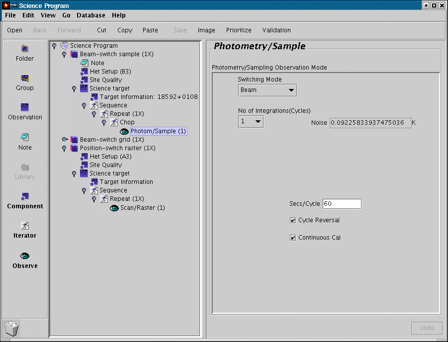
The repeat iterator and integration time in general
Back to your Science Program window now. Click on the Repeat iterator. It's only property is a repeat counter: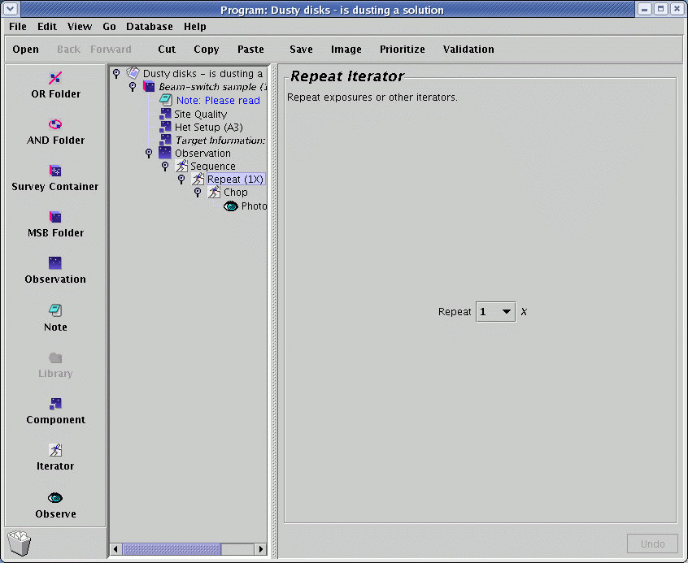
The repeat iterator acts on things that are inside the repeat iterator (i.e. indented under it) in turn. So if you set it to 2, your science observation consist of two spectral line samples; i.e you will end up with precisely two spectral line observations. If you require a long integration of a source, it makes sense to break the observation down into shorter integrations of around ten minutes or so, so that data quality can be assessed as the observation progresses. In practice, you set up the integration time required per spectral line observation using the photom/sample eye and then use the repeat iterator to define a sufficient number of repeats to give the total required integration time.
Now you can see how your time usage builds up. Working our way inside out (and bottom to top):
- The photom/sample
eye is set to an on-source integration time (and shows you the
estimated RMS noise) which will end up in a single file.
- The Repeat
iterator multiplies the number of times the sample is carried
out. If you increase it from the default of 1, don't forget to
take that into account when calculating how deep you will go.
- The observation
component shows you the estimated time of the sequence it
contains.
- The MSB component
will give you the estimated time of the observations inside
it. For the heterodyne OT, you only need to define MSBs for
your science observations. Obviously, before the observation,
the TSS will tune the receiver (when necessary), focus the telescope,
and do a pointing observation. Specific calibration
instructions, for example, the observation of a spectral line
standard and/or a planet should be described in the note attached
to the MSB. Be sure to remember to click the show-to-observer
tick box for the note. In conclusion, the estimated time for an MSB
only includes
observations of the science target - one should remember there
will be instrument set up and calibration overheads on top of
this when planning your observing program.
 The Science Program will
give you the estimated time of all
MSBs inside it including the number of repeats. So if you have a
1hr MSB (as in this example) and you set the MSB counter to 2,
your MSB estimated time will be 1hr and your Science Program
time will show 2hrs.
Remember that different MSBs may be observed on different nights,
whereas observations within a single MSB will be observed within a
aingle night.
The Science Program will
give you the estimated time of all
MSBs inside it including the number of repeats. So if you have a
1hr MSB (as in this example) and you set the MSB counter to 2,
your MSB estimated time will be 1hr and your Science Program
time will show 2hrs.
Remember that different MSBs may be observed on different nights,
whereas observations within a single MSB will be observed within a
aingle night.
Adding information in "Note" elements
By default, the heterodyne library MSBs contain one note element at the beginning of the MSB. This consists of a text window where you can include textual information, with the option of showing the note to the observer and TSS at the time the observation is made. If you click on the note icon, the right hand panel allows you to enter the name of the note and the main text body of the note. The "Show to observer" check-box should be checked if you want the note to be visible for the observer/TSS at the time of observation. It is strongly recommended that each of your MSBs contains at least one "Show to observer" note. All of the information about the observation not covered by other elements of the MSB should be included in "show to observer" notes. This would be much of the material which would have previously gone into the "Overall Strategy" and "Observing Cookbook" sections of heterodyne observing templates. It is important to note that calibration details are not yet explicitly included in heterodyne MSBs, so the observer should spell out the required calibration observations in a "show to observer" note.

Setting the "Show to observer" tick box brings up a "Completion Parameter" and "binning" field. These should contain information which help the observer and TSS to decide when to consider your observation to be complete. By default, your program will be executed with exactly the number of integration and number of repeats as specified. However, where possible, an attempt will be made to optimize the process using the specified Completion Parameters. The detailed logistics of the scheduling may prevent this, but when possible this may save time for your project or guarantee the results. For instance you may want to allow for more time than the MSBs nominally take to allow for the addition of extra repeats in order to ensure the requested rms. Setting a S/N target may save unnecassary repeats, etc. The "Completion Parameter" should include a value for the total expired time, and/or a required signals-to-noise, and/or RMS noise value. Best is to provide all three and whichever one is reached first determines the completion. The assumed bin size, either in km/s or MHz, should be entered in the "Binning" field. The above screenshot shows an example of a possible "Show to observer" for an extragalactic spectral line observation. Be aware, however, that ultimately it is up to YOU, the PI, to determine when the data have sufficient S/N, by downloading and analyzing your data soon after they are acquired and updating your MSBs as required.
Additional notes can be inserted at any point in the MSB from the icon menu and you may have more than one "show to observer" notes in an MSB. For example, you could choose to insert a "show to observer" note above the "chop" element to clarify the use of an unusual chopping scheme.
Finally, there is no need to repeat information in notes that is already included in other components of the MSB. This might include receiver tunings, chop throws, offset positions and science targets. All of these should be set up in the appropriate MSB components. If they are reproduced in notes, there is a risk that changes made to main body of the MSB will not be reflected in the notes, leading to conflicts between the notes and the MSB components resulting in confusion at the telescope.
Summary: Making your heterodyne MSB
So far, the various elements of the MSB have been described. We now summarise the general procedure for making your own.
- Choose the corresponding MSB template from the heterodyne library and copy/paste it to your science program. Each of these is described briefly below.
- Fill out the het setup component with the frontend/backend details for your observation.
- Set up the site quality component, normally this means simply leaving the "allocated" button checked.
- Enter the target information for your target. This step can be as simple as entering the RA/DEC and epoch. Don't forget there are the useful tools of the Name resolver and the position editor to help you out here.
- Set up the chop iterator. Again this can simply mean entering the chop throw angle and reference frame, or this iterator can be set up via the position editor.
- Set up the photom/sample eye. Remember to enter the total on-source integration time per sample.
- Set up the repeat counter to give the number of repeats of the time set up in the photom/sample eye to get your total required integration time. If you want a total integration of 30 minutes on-source, you should set up an integration time of 5 minutes in the photom/sample eye and set the repeat counter to 6. When observing, you can then monitor the observation by inspecting the data file produced every ~13 minutes, and co-add the spectra as you go along. In general, if you want to build up long integrations, you will want the duration of the basic observation to be of the order 10-15 minutes ("on+off+overheads").
- Add at least one "show to observer" note. This should contain additional information on the overall aims of your science program, details of required calibrations and any other special notices you want the observer and TSS to act upon when the observation is made.
- Click on the outermost level of the MSB. In the right hand panel you
should give the MSB a meaningful name. Be aware that observers and operator
typically will see only the start of that line in the browsing tool, hence
put the most significant information at the start. E.g.
'IRC+10216 spectral line survey, CO molecule, transition 230.538'
'IRC+10216 spectral line survey, CO molecule, transition 220.399'
will look similar without expanding the name field in the browser. Instead
'IRC+10216 230.538, spectral line survey, CO molecule'
'IRC+10216 220.399, spectral line survey, CO molecule'
would be a better compromise. Below the name field, there is pull down menu labeled "Observe". This counter allows you to control how many times you want the whole MSB observed. If you want it done just once, leave this as (1x). You can set the relative priority of the MSB within your science program using the "Priority" pull down menu. Set this between 1 and 99, with 1 signifying the highest priority.
The Heterodyne MSB library
The heterodyne library groups the MSB templates according to whether the observation is to be a Sample, a Grid-Pssw, a Raster-Pssw, or a Jiggle-Chop:
- Single-spectrum samples:
this is the most fundamental mode, in being a single spectrum observed
toward at a single position. The sample can either use a position
switch (Sample-PSSW) or a beam switch (Sample-BMSW).
PSSW observations typically spend of order 30 secs on the source
before going to the reference position for 30 secs, but they can
accommodate large switches exceeding several degrees. BMSW
observations by contrast offer a better sky cancellation by switching
much faster between the source and reference (up to several Hertz in
'continuum mode'), but are restricted to a switch of maximally
180". Also, the telescope will nod: half the time will be
spend chopping to one side of the source, half to the other side,
requiring both sky positions to be free of emission.
The offset iterator can be used to observe at a position offset from the one specified in the Target Component. If you specify multiple targets these modes will be equivalent to a Grid-PSSW or a Jiggle-Chop, although the detailed execution will be different in case of the latter (see below).
- Grid-PSSW: this mode actually is the same as a Sample-PSSW switch carried out at multiple offsets, either in a regular grid or as a series of explicit offsets. (Better said: a Sample-PSSW formally is a Grid-PSSW with only a single offset). Grid-PSSW maps are used where relatively small maps are required with longish integration times per point.
- Jiggle-Chop: this mode makes a small
map by "jiggling" the secondary mirror rapidly over all the points in
the map and is similar to Sample-BMSW observations on a regular,
pre-defined grid, such as a 5x5 pattern. There is an important
distinction: rather than fully completing each position before going
to the next, as would happen with an Sample-BMSW inside an Offset
Iterator, Jiggle-Chop will combine sequences of short integrations at
each position covering the whole jiggle pattern many times. As in
Raster-PSSW it will typically observe multiple source positions before
going to the reference position for a relatively longer time.
Jiggle-Chop is new to heterodyne observing at the JCMT, and specifically designed for HARP although useful for single "pixel" receivers as well.
- Raster-PSSW: This mode is useful for making large maps rapidly. The telescope continuously takes data while scanning across the source in e.g. a back-and-forth pattern. It will typically go to the reference between rows and an interpolation of the references on either side of the row will be used for each of the samples in the row. This mode is much more efficient to map large regions than Grid-Pssw.
Samples
A sample denotes an observation consisting of one pointing per science target. It can be beam switched (BMSW) or position switched (PSSW). If you open up the PSSW sample MSB in the heterodyne library, you will see that it contains the same elements as the BMSW MSB, with the exception of the "chop" component. Opening the "Target Component" component, however, reveals two rows in the bottom right hand window, a SCIENCE and a REFERENCE row. Clicking on one of them allows the user to specify the co-ordinates of either the SCIENCE, or "on" position, or the REFERENCE or "off" position. The REFERENCE position can either be specified as a co-ordinate offset from the SCIENCE position, by checking the "offset" tick-box, or as an absolute co-ordinate, by leaving the "offset" tick-box unchecked.Important: If you put or leave a REFERENCE position in the Target Component of a chopped observation (Sample-BMSW, Jiggle-Chop) that position will be used when doing a three-load calibration (hot-cold-sky). For all sample modes, the total "on" integration time per sample is indicated in the "Photom/Sample" eye. that integration time no longer is the "on+off" time, only the "on" time.
Grid-PSSW Maps
Observations of a single science target at multiple positions are generically referred to as Grid observations. Note that the user can define exactly the position offsets required from the map centre, and there is no requirement that the pointings form a regularly shaped grid. Opening the various grid MSBs in the heterodyne library shows they are similar to the Sample-PSSW MSBs except for the addition of an Offset Iterator. This iterator enables the user to specify the required pointings for the observation.Suppose the user requires three pointings along the long axis of a galaxy, at a half beam width spacing of 10 arcseconds. Let us assume the long axis of the galaxy has a position angle of 30 degrees on the sky. First enter the position angle in the "P.A." field. The rotated frame has axes labeled p and q, so in order to obtain the required pointings along our galaxy we require (p,q) offsets of (0,-10), (0,0) and (0,10). One adds a new pointing by clicking on the "New" button. One then modifies the offsets via the p and q boxes directly above the "New" button. The highlighted pointing can be removed using the "Remove" button. The "Rm. all" button removes all of the user-added pointings. The arrow buttons to the right of the box displaying the pointings allow the pointings to be re-ordered. The highlight pointing can be advanced one position up or down the pointing list, or to the top or bottom of the list by clicking on these arrow buttons. For our example, the completed Offset Iterator will appear as shown below.
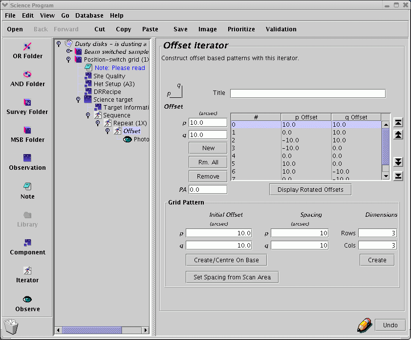
If you want to see what the offsets are in the sky frame (which will be the co-ordinate frame specified in the "target information" element), click and hold the "Display Derotated Offsets" button.
The Offset Iterator has the ability to automatically generate regularly spaced grids without the need to enter each pointing individually. The "Grid Pattern" section of the "Offset iterator" allows the user to specify the offset of the top-left corner of the grid (i.e. most positive 'p' and 'q'), the grid point spacing, and the dimensions of the grid, in grid points. To create a 3x3 grid, with a ten arcsecond spacing, one would fill in the fields of the grid pattern section as illustrated below, and then click on either "Create/Centre on Base" button, or the "Create" i.e. on corner button. The pointings generated then appear in the pointing list box above.
Notice that "Create/Centre on Base" chooses the the geometrical centre of the grid for the (0,0) position, and ignores the contents of the "initial offset" fields. The "Create" (on corner) button, on the other hand, will place the top left pixel at the offset specified in the "initial offset" fields. For example, if you want a 2x2 grid with 10 arcsecond spacing at offsets (0,0),(-10",0),(-10",-10"),(0,-10"), then set the initial offsets to p=0,q=0, spacing p=10",q=10", and dimensions 2x2, and click the "Create" button.
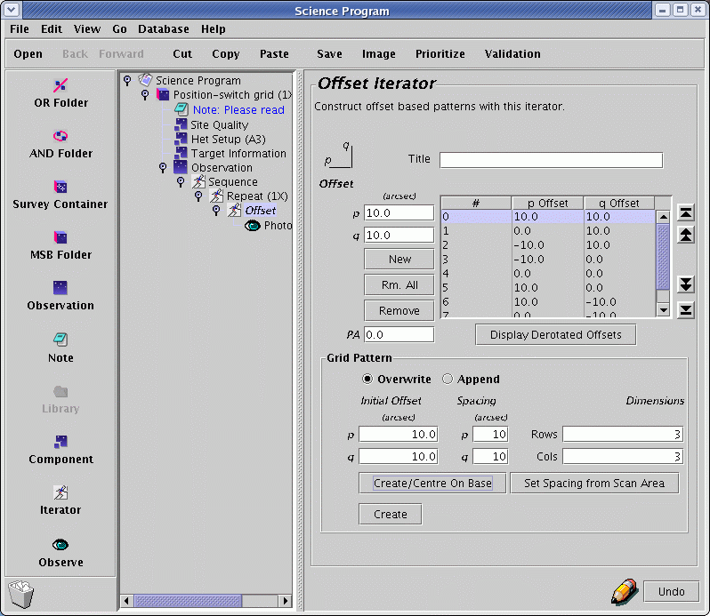
Jiggle Mapping
Jiggle-Chop observations, like Grid-PSSW, map a region around a source. This mode is primarily intended for array instruments with widely spaced receptors for which 'jiggling' is needed in order to achieve a Nyquist sampling. Nevertheless it is available for single-pixels receivers as well.
As opposed to Grid-PSSW, the chopping secondary is used to move over the chosen jiggle pattern. This allows for a fast switching of the position and makes it possible to observe e.g. the whole jiggle pattern before going to the reference position. (In "continuum mode", however, where the chop frequency is much higher, half the time is spent at the reference position.) Jiggle-chops are beam-switched observations, and hence the distance to the reference can be no more than 180". Note also that Jiggle-chops are array centered, i.e. the center of the jiggle pattern is the center of the array.
Opening the various chop MSBs in the heterodyne library shows they are similar to the Sample-BMSW example above except that there is a "jiggle eye" instead of the "photom/sample eye". It offers various jiggle patterns: 3x3 through 11x11 plus HARP specific jiggles (HARP4 and HARP5). HARP4 is a 4x4 pattern with 7.5" pixels designed to fill in the footprint, but slightly under Nyquist sampled, and HARP5 is a 5x5 pattern with 6" pixels, i.e. slightly better than Nyquist sampled. For the others, the "Jiggle Spacing" needs to be defined by the user: typically 0.5 or 1 beam-spacing in arcsecs. The PA and System should be left at "0.0" and "Tracking" for the typical user. Finally, the integration time for each jiggle position can be specified as "secs/jig posn". (Note that this is the total "on-source" time per position.) As for the "photom/sample" eye, the estimated RMS noise per channel is shown in the "Noise" box.
Note that currently (February 2007) there are 3 dead receptors in the bottom row of the HARP array. The orientation of the array can not be pre-determined due to a 90-degree uncertainty caused by the K-mirror rotation. Thus the effective area that could be fully sampled is 1.5x1.5 arcmins in one foot print. It is expected that two receptors will be fixed by the end of March 2007. Before then special techniques are required to make mosaic jiggle maps. Please contact your Friend of the Project for details about this. 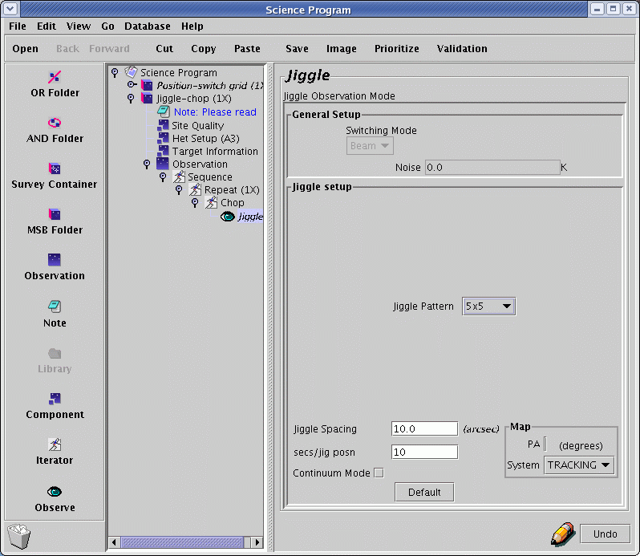
"Continuum mode" can be selected as is explained for the "photom/sample eye". Due to the resulting increase of the time needed to complete the observation, by a factor of approximately 1.7, only check this if you really need the measurement of the continuum level.
Important: If you put or leave a REFERENCE position in the Target Component of a chopped observation (Sample-BMSW, Jiggle-Chop) that position will be used when doing a three-load calibration (hot-cold-sky).
Rasters
The format of the position switched raster MSB is similar to the sample MSB, except that the "photom/sample" eye is replaced by the "scan/raster" eye. The fields in the "Area" panel allow you control the size and sampling of the raster map. The resulting Nr. of samples/pixels and Nr. of scans/pixels in each dimension is shown. The total required on-source integration time per sample point can be specified in the "Sample time" box. The system will automatically break up the observations into multiple passes over the map.Setting up raster maps is significantly different when using a non-array receiver (i.e. RxA or RxW), or an array receiver (i.e. HARP). Read the example below for setting up MSBs for an RxA/RxW Raster Map, and for a HARP Raster Map.
Making a Raster Map With a Non-Array Receiver (RxA/RxW)
When using a single-pixel receiver such as RxA or RxW, the "sample spacing" will be the pixel-size along scan direction of the telescope. The "scan spacing" will be the pixel-size in the cross-scan direction i.e. between the scanned rows. Be aware that there will be a pixel centered on the base position only if the number of pixels in each direction is odd. The size of the map must be a multiple of the pixel-size in each direction, and is defined as the distance between the centers of the outmost pixels!
Suppose, for example, that you want to use RxA to make a 238"x28" map. A sample spacing of 7" and scan spacing of 7" will result in a pixel map of 35x5. Note that it is customary to oversample the scan-direction to counter-act smearing, although this often requires a regridding of the final map to recover the intended rms/pixel.
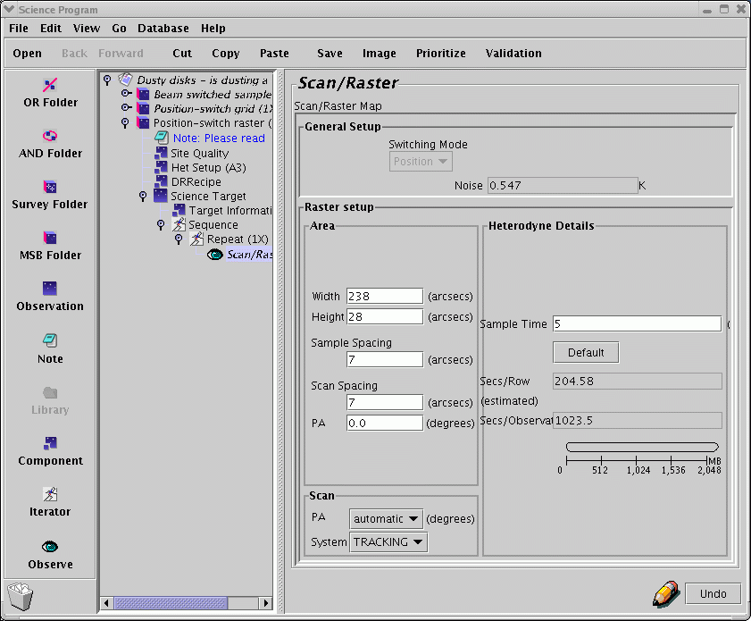
The sample time box allows the user to set the amount of time data is taken for for each map "point" as the receiver is scanned across the sky. The RMS noise per channel of the final co-added map is also indicated, as is the estimated time to complete each row and the complete map.
It is possible to set the scanning direction, but for most purposes this should be left to the default values.
Making a Raster Map With an Array Receiver (i.e. HARP).
HARP is a 4x4 square array of receptors, which are separated by 30". To make a raster map, the telescope scans continuously along (by default) the longest axis of the map (defined by the width and height of the map). The array is rotated by 14.04º to the direction of the scan. This results in a fully sampled map, with 7.5" pixels. Thus the sample spacing must be set to 7.5". At the end of a scan, the array is shifted up by the scan spacing and the telescope makes another scan across the area to be mapped. Normally the scan spacing should be set to 1/2 the array size (58" (i.e. 60"*cos(14º))) so that each pixel is covered twice by the array, or set the scan spacing to the full array size (87" (i.e. 90"*cos(14º))) so that there's no overlap.
(CAVEAT: Currently (Feb 2007) three of the receptors are not working, effectively making a 3x4 array. Two of the non-functioning pixels are expected to be repaired in March 2007. Until they are repaired, it is recommended that you use a scan spacing of 44" to assure complete coverage of your map.) 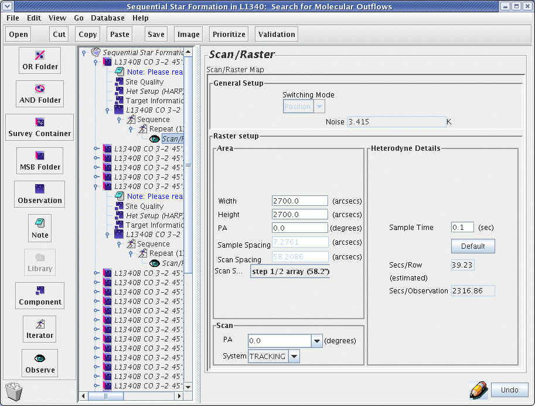
Effectively the largest single map one can make is one square degree. Of course for larger maps the integration time per pixel (sample time) should be set to the minimum value, 0.1 seconds per pixel. Larger maps can be made, but they should be broken up into smaller pieces, one piece per MSB, with an offset iterator for each piece. Note that mosaicing such large maps will likely tax most computing systems beyond their capacities.
If the raster map is to be repeated, a useful technique is to "basket weave" the rasters, i.e. make a raster by scanning along one axis of the map, and then repeat by scanning along the other axis. This minimizes striping in the resultant map. One way to do this is to edit a science observation for a raster map, set the parameters as required, then copy the entire science observation and paste the copy below the original. In the original raster "eye"-con, set the SCAN PA (lower left panel) to user def, and type in '0'. Do the same in the copy raster "eye"-con, but set the SCAN PA to '90'.
Sample Time: The sample time is the total integration time per pixel in the completed map. The minimum time is 0.1 seconds. There is no maximum time, except that you should make sure the MSB takes no more than 1.5 to 2 hours at most.